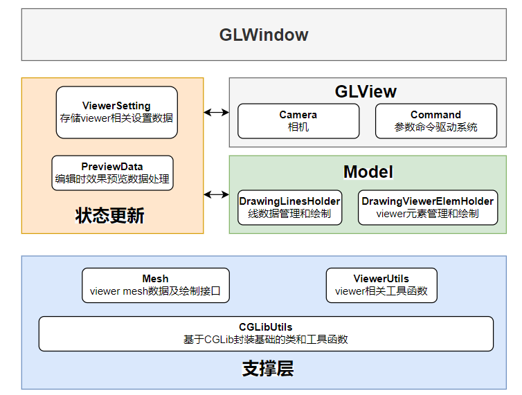

13.Draw line以及框架体系介绍
提示：
作者在视频课程中对本章内容有详细的批注讲解，包括原理和代码逻辑，欢迎观看。
本节课程内容较多，同时引入了PreviewData、Command、DrawingLinesHolder、DrawingViewerElemHolder等状态设置或绘制管理类，同时丰富了相关工具函数类，当前的框架体系图和模块逻辑关系图如下。

为便于讲解，同时又能有完整的功能效果，接下来将会先逐级铺垫相关内容，最后再组合连接，展示效果。
13.1.DrawingLinesHolder
DrawingLinesHolder是线数据管理和绘制类，我们先来看DrawingLinesHolder主要的的public函数调用逻辑图，
DrawingLinesHolder接口调用逻辑" width="600" align="middle" style="display: block; margin-left: auto; margin-right: auto;"/>
BeginToDrawLines和EndOfDrawingLine是成对出现的，当开始drawCurve时需要（通过Model类对象）调用BeginToDrawLines进行初始化配置，当结束绘制时（ESC按键）需要调用EndOfDrawingLine进行收尾处理；GetSnapPoint，如果在绘制过程中预览时开启了点捕捉，会调用该方法尝试获取捕捉点并更新，毕竟在类中管理着线数据，包括关联的关键点，如端点、中点等。pushCurveData，想象一下怎么把有效绘制过程的数据传递过来呢？在绘制操作（鼠标点击、参数命令输入执行）有效时，ViewerCommand会处理这些操作并返回对应数据，然后调用Model的AddVertexToLines，进而调用PreviewData的addPara添加绘制参数，当其complete标识为true时会调用其getCompleteLines以获取对应的线数据，将线数据pushCurveData进DrawingLinesHolder中，为后续的DrawLines提供最新的线数据；DrawLines，将最新的线数据以及预览的线数据（通过PreviewData的getPreviewLines获取）绘制到GLView中；DrawSelectedLines，以不同的效果绘制选中状态的线数据，这样在GLView中被选中的线会以选中效果展示。
到现在应该了解了DrawingLinesHolder的运行机制，接下来我们来看关键的内部实现。
map<PointData_1e_3, vector<CurveData*>> lines，线数据是以所在工作平面的法向分类的；而CurveData中的vertex数组元素是每两个作为一条线段；DrawLines，先按照图层Layer进行分类并绘制，这样每一批的颜色是一样的；在绘制时根据线数据进行setupLines（数据和渲染桥梁VAO/VBO/EBO的配置），然后绘制；
Attention
- 根据颜色进行分批绘制可以提高绘制效率，因为总的绘制批次要少；
- 由于线数据是可能频繁变化的（通过交互来绘制、删除、选中等），所以在每个渲染循环中都要进行
setup和draw，这样效率较低，而提高效率的思路之一是根据图层或空间划分瓦片进行数据组织，每个渲染循环中只重新setup（相比上一个渲染循环）有变化的数据块，这样没有变化的数据块仅draw即可。
当然选中状态的线索引、节点数据、工作平面等，可自行根据上述执行逻辑熟悉。
13.2.DrawingViewerElemHolder
Important
本节对此前工作平面相关数据构建和绘制内容进行了抽象和封装，封装成了DrawingViewerElemHolder类。
DrawingViewerElemHolder是viewer元素管理和绘制类，管理和绘制如工作平面、viewCube、旋转中心标识等viewer元素。
我们来看public函数的调用逻辑图，
DrawingViewerElemHolder接口调用逻辑" width="600" align="middle" style="display: block; margin-left: auto; margin-right: auto;"/>
GetViewCubeBody，意如其名，当鼠标点击事件触发时，需要判断viewCube是否被点中，就需要（通过Model）调用DrawingViewerElemHolder的该函数获取viewCube的几何体，进一步射线相交判断是否是否击中以及击中的哪个面，进而决定是否进行视图切换以及切换到哪个视图；drawWorkPlane和drawViewElement将对应viewer元素绘制到GLView中，其中drawViewElement可以根据传参的不同而绘制viewCube或mouseRotateLabel。
由于viewer元素是相对固定的，大部分时候我们只需要根据固定的数据setup一次，然后在每个渲染循环中不断的取draw即可；当然当有需要去设置工作平面时，我们再去对应的用新数据setup工作平面。
13.3.Model
Model类我们比较熟悉，本节经过重构之后丰富了其功能，我们也一起梳理下它的结构和运行机制。
我们来看public函数的调用逻辑，
Model接口调用逻辑" width="600" align="middle" style="display: block; margin-left: auto; margin-right: auto;"/>
BeginToDrawLines、EndOfDrawingLine是成对出现的，当开始drawCurve时需要调用BeginToDrawLines进行初始化配置，当结束绘制时（ESC按键）需要调用EndOfDrawingLine进行收尾处理；其具体实现以来DrawingLinesHolder类。GetViewCubeBody在上节中已经讲过，在判断是否点击了viewCube时会调用获取几何数据；AddVertexToLines，ViewerCommand会处理各种绘制操作，识别并处理有效的操作并返回对应数据传递给Model（通过调用该函数）,进行传递给PreviewData......请回顾上节课程吧；SetPreviewNextPoint，为了实现绘制状态下鼠标移动时的预览效果，需要（在GLView中的updatePreviewNextPoint）调用该函数并结合DrawingLinesHolder的GetSnapPoint更新数据，传递给PreviewData的previewNextPt，进而在在此后的DrawLines（DrawingLinesHolder）中绘制预览效果；Draw2和DrawViewElement进行线数据、视图元素的绘制；注意随着课程的深入它们的功能会进一步的丰富。
Important
注意随着课程的深入它们的功能会进一步的丰富，一起探索吧~
到这里大家基本上理解了Model类的作用是场景数据的管理和绘制，它会与ViewerSetting、PreviewData进行联动和状态设置，调用DrawingLinesHolder、DrawingViewerElemHolder来具体实现。
13.4.PreviewData
PreviewData负责效果预览和完成的数据处理，处理和组织预览数据并在达到完成条件时生成结果数据（通过getCompleteLines）更新到DrawingLinesHolder中。
PreviewData为Model和GLView类提供状态数据的处理和更新，从这个角度来说它时辅助类。
我们来看其public函数的调用逻辑，
PreviewData接口调用逻辑" width="600" align="middle" style="display: block; margin-left: auto; margin-right: auto;"/>
previewNextPt字段，在上文中介绍过，该字段通过上接鼠标移动事件实现预览位置数据的不断更新，进而通过getPreviewLines向DrawingLinesHolder提供预览线数据以绘制；addPara，在上文中介绍过，通过承接ViewerCommand传递过来的有效绘制数据进行预览效果和完成效果数据的组织，进而向DrawingLinesHolder提供线数据以绘制；update，在每次达到complete状态后进行当前数据的更新，如多段线绘制时不断更新当前起点数据；getCompleteLines和getPreviewLines均已介绍过~GetCurLastValidPoint，向ViewerCommand提供最新的有效数据，以方便根据命令进行有效操作的处理，生成对应数据；如处理“输入偏移”生成目标点数据时。
到现在应该了解了PreviewData的运行机制，接下来我们来看关键的内部实现。
addPara添加参数后判断complete字段是否为true；getLines,根据数据组织构造对应线数据，如预览或完成的线、矩形、圆弧、圆等数据，构造的线数据都是线段样式的；以来CGLib进行坐标转换、圆弧离散等操作。
详细的实现细节需要大家看代码进行熟悉，由于课程时间和精力有限博主不在这里过多絮叨~，有问题或疑问请留言或联系我。
13.5.ViewerCommand
ViewerCommand是参数命令驱动系统，负责处理绘制状态下的交互操作，包括鼠标点击、命令和参数输入等操作，识别有效的操作并返回数据传递给Model进行进一步的绘制数据处理。
ViewerCommand核心是命令节点的网状结构，允许一个节点链接一到多个节点及复杂链接的循环指向。如三点定圆命令结构如下，
从根节点出发，每个层级的几点通过处理不同类型的命令和参数，生成同样意义的数据，如果这些命令和参数有效的话。如可以选择通过pick point[S]、input coordinate value[N]、input offset base current point[O]不同形式来确定node0 of Arc。
绘制矩形命令结构如下，
接下来我们来看其public函数的调用逻辑，
ViewerCommand接口调用逻辑" width="500" align="middle" style="display: block; margin-left: auto; margin-right: auto;"/>
ActiveCommand，当进入绘制状态时激活对应的绘制命令；OnKeyEnterDown和OnMouseLeftDown功能相近，当相关操作（按键、点击）触发时调用执行，而后ViewerCommand会识别和处理这些操作，将其中有效操作按照当前命令节点进行处理返回对应绘制数据，而后传递给Model，最终通过预览或完成效果展示在GLView中；GetCommandStatus，每次有效操作处理后调用该函数获取下一步的命令提示，（在GLView中通过GLWindow的调用回调函数）将提示显示在GLWindow的状态栏中，引导用户继续操作。
相信大家已经对基本的体系结构和运行机制熟悉了，如果想了解详细的实现细节需要大家看代码进行熟悉。
由于课程时间和精力有限，作者不在这里过多絮叨~，有问题或疑问请留言或联系我。
13.6.Camera
此前将结果Camera类的详细实现，相信大家对此不陌生，本节我们一起回顾下其运行机制。
我们来看其public函数的调用逻辑，
Camera接口调用逻辑" width="600" align="middle" style="display: block; margin-left: auto; margin-right: auto;"/>
GetViewMatrix，在GLView的paintGL中调用获取模型的观察空间转换矩阵，随后传递到顶点着色器中；GetViewMatrix4VieweCube，在GLView的paintGL中调用获取viewCube的观察空间转换矩阵，随后传递到顶点着色器中；GetViewMatrix4MouseLabel，在GLView的paintGL中调用获取旋转中心标识的观察空间转换矩阵，随后传递到顶点着色器中；handle，在GLView事件触发时调用，其处理有效的交互操作，如平移、缩放、旋转、漫游等；FitView，在GLView事件中发生viewCube的有效的点击时调用，进行视图的快速切换。
好了，详细的实现细节需要大家看代码进行回顾~
13.7.总结
一起回顾下当前的逻辑关系图和接口调用逻辑体系，虽然到当前章节还没有实现过多的功能，但我们项目的框架体系已经逐渐搭建起来，还会随着课程的深入而不断丰富，一起感受技术和架构的魅力~